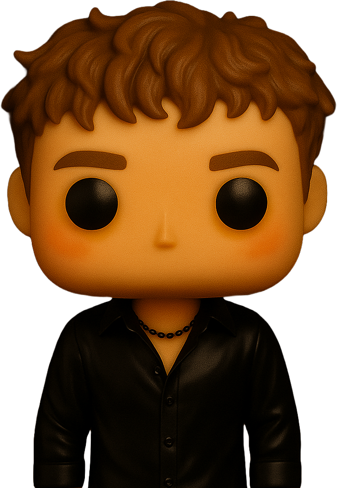

Jestem studentem trzeciego roku na Uniwersytecie Adama Mickiewicza w
Poznaniu, z
pasją do projektowania stron internetowych, tworzenia
aplikacji i sztucznej
inteligencji.
Moją studencką podróż uzupełnia praktyczne doświadczenie zdobyte podczas staży i
pracy w branży technologicznej.
Podczas stażu w M3 Group
pracowałem jako projektant
stron internetowych (WordPress) i projektant aplikacji przy
użyciu FlutterFlow,
gdzie doskonaliłem swoje umiejętności w budowaniu przyjaznych dla użytkownika i
responsywnych rozwiązań internetowych.
Aktualnie pełnię funkcję administratora i projektanta stron
internetowych dla
EDU-CZAR oraz DermaExpert. W ramach tych
obowiązków zarządzam i rozwijam strony
internetowe tych firm, dbając o ich funkcjonalność, atrakcyjność oraz
łatwość użytkowania, co przekłada się na wzrost satysfakcji klientów i
usprawnienie procesów biznesowych.
Stale poszerzam swoją wiedzę i podejmuję nowe wyzwania w świecie technologii i
designu. Moje projekty skupiają się na tworzeniu intuicyjnych interfejsów
użytkownika i nowoczesnych rozwiązań webowych, które
łączą funkcjonalność z estetyką.
Dzięki zdobytemu doświadczeniu oraz
certyfikatom, takim jak Fundamentals of
Accelerated Computing with CUDA Python, Fundamentals of Deep
Learning oraz
Generative AI with Diffusion Models, jestem przygotowany na
podejmowanie kolejnych kroków w mojej karierze, z otwartością na rozwój i
poszerzanie zakresu swoich kompetencji zawodowych.

Trochę więcej o mnie...
Poza pracą zawodową, osobiście interesuję się sztuczną inteligencją
i od kilku lat eksploruję narzędzia AI.
Lubię również tworzyć materiały cyfrowe, wykorzystując narzędzia takie jak
FL Studio, Adobe Premiere Pro i GIMP do realizacji kreatywnych
idei, które umieszczam
anonimowo na popularnych platformach social media.
W wolnym czasie chętnie sięgam również po gry komputerowe oraz
filmy, co pozwala mi
odpocząć i czerpać inspiracje wizualne oraz koncepcyjne do własnych
projektów.
O mniePozwól, że się przedstawię...
Jestem studentem trzeciego roku na Uniwersytecie Adama Mickiewicza w
Poznaniu, z
pasją do projektowania stron internetowych, tworzenia
aplikacji i sztucznej inteligencji.
Moją studencką podróż uzupełnia praktyczne doświadczenie zdobyte podczas staży i
pracy w branży technologicznej. Podczas stażu w M3 Group pracowałem jako projektant stron
internetowych (WordPress) i projektant aplikacji przy użyciu
FlutterFlow,
gdzie doskonaliłem swoje umiejętności w budowaniu przyjaznych dla użytkownika i
responsywnych rozwiązań internetowych.
O mniePozwól, że się przedstawię...
Aktualnie pełnię funkcję administratora i projektanta stron
internetowych dla
EDU-CZAR oraz DermaExpert. W ramach tych
obowiązków zarządzam i rozwijam strony
internetowe tych firm, dbając o ich funkcjonalność, atrakcyjność oraz
łatwość
użytkowania, co przekłada się na wzrost satysfakcji klientów i
usprawnienie procesów biznesowych.
O mniePozwól, że się przedstawię...
Stale poszerzam swoją wiedzę i podejmuję nowe wyzwania w świecie technologii i
designu. Moje projekty skupiają się na tworzeniu intuicyjnych interfejsów
użytkownika i nowoczesnych rozwiązań webowych, które
łączą funkcjonalność z estetyką.
Dzięki zdobytemu doświadczeniu oraz certyfikatom, takim jak Fundamentals of
Accelerated Computing with CUDA Python, Fundamentals of Deep
Learning oraz
Generative AI with Diffusion Models, jestem przygotowany na
podejmowanie kolejnych
kroków w mojej karierze, z otwartością na rozwój i poszerzanie zakresu swoich
kompetencji zawodowych.
O mnieTrochę więcej o mnie...
Poza pracą zawodową, osobiście interesuję się sztuczną inteligencją
i od kilku lat eksploruję narzędzia AI.
Lubię również tworzyć materiały cyfrowe, wykorzystując narzędzia takie jak
FL Studio, Adobe Premiere Pro i GIMP do realizacji kreatywnych
idei, które umieszczam
anonimowo na popularnych platformach social media.
O mnieTrochę więcej o mnie...
W wolnym czasie chętnie sięgam również po gry komputerowe oraz
filmy, co pozwala mi
odpocząć i czerpać inspiracje wizualne oraz koncepcyjne do własnych
projektów.